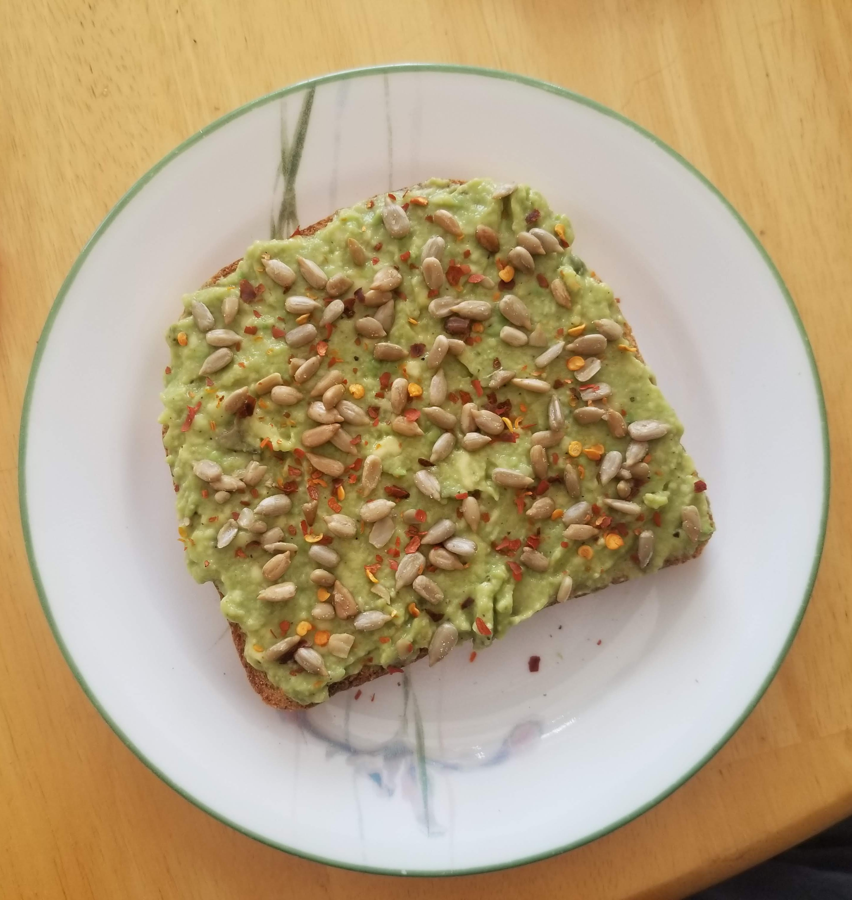

Avocado Toast
Back to home

Description:
This avocado toast recipe is simple, customizable, healthy, and full of flavour. Paired with a couple scrambled eggs, it is one of my go-to breakfasts. No California boujee-ness here.
Ingredients:
For the basic toast:
Servings: 1
- 2 slices hearty whole-grain bread
- 2/3 of a small avocado or 1/2 of a large one
- 1/8–1/4 tsp salt
- 2 tsp lemon or lime juice
- Garlic powder to taste
- Black pepper to taste
- Smoked paprika to taste
- Hot sauce to taste
- Any flavouring goes
Optional toppings (pick any or all):
- Toasted or raw sunflower or pumpkin seeds
- Eggs, cooked however you like
- Crushed red pepper flakes
Steps:
- Toast bread slices to your liking.
- Remember to cook the eggs if using.
- Pit the avocado and mash in a bowl using a fork. Add all remaining ingredients (not the toast) to the bowl and mix.
- Divide the avocado mixture evenly (or unevenly; I'm not your boss) amoung the two slices of toast and spread. Top with desired toppings.
P.S. This avocado mixture works great as a makeshift guacamole, especially if you use lime juice. Also, why are you even reading this recipe. That's like using a recipe for a fruit salad. Everything f*king ingredient is customizable.
Back to home